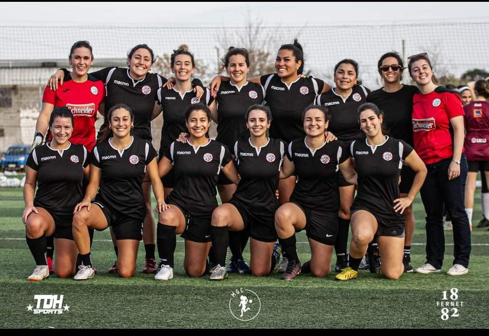

Club Social Dardorland

Futbol Masculino
El futbol másculino fue la disciplina fundadora de esta instución. Ha logrado tres copas al día de hoy.
Más información

Futbol Femenino
El futbol femenino fue la última rama en hacerse presente en la institución, siendo campeonas por primera vez en el año 2023
Más información
Basquetbol Masculino
El basquetbal másculino, con sus dos delegaciones han sido campeones en reiteradas ocasiones. Siendo la última en el año 2022.
Más información